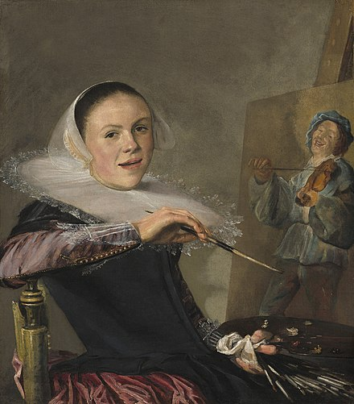

I feel like this little girl, everytime I make something. I never want to lose my childlike
sensibility and beginner's mind. Those are foundational creative ways of being for me.
Althea Gibson would be a famous, wealthy, two-sport professional
athlete today, but because of lack of opportunities for women and because of structural
racism, her options to monetize her talents were very limited.
My uncle was a mainframe computer programmer. He got us an Apple IIe for Christmas in 1987.
I loved the bright green color of the readout on the screen. I found it mesmerizing.
Women who build things and take them apart and build them again are the answer to everything.
Jean-Michel Basquiat is one of my favorite painters. His paintings have a thrumming energy and are very playful
in formal and intellectual ways. They are smart without being in their head. I wish I could have hung out with him in his studio.
PJ Harvey, Bjork and Tori Amos loomed so large for me in the 1990s. They were musicians for themselves, not for a studio creation
of what a woman musician looked or sounded like. They are all brilliant.
Lusia Harris (shooting the ball) was one of the most dominant players of her generation, but because there were no
professional leagues for women, she could not professionalize or monetize her talents, but she paved the way
for other women to do so. There is an amazing documentary about her, "The Queen of Basketball" that won an Oscar.
These women working together represent a grand utopia: a 1940s, black feminist space.
I learned how to bartend at 18, and was trained by two women bartenders, Sandy and Lori. Bartending is a trade, it feels like witchcraft,
but with alcohol. This painting reminds me of those times.
As a child, I was curious how our Atari knew to read a game cartridge
and display specific graphics-I could tell the cartridge and game console were "talking to each other." Many years later, the motherboard failed and I replaced it. It still works!
I spent a big chunk of my childhood in Oregon. Roake's sponsored my youth basketball team.
Our shirts were pink with red silkscreened text. I want to remake them someday.
Pat Summitt coaching Candace Parker, 1990s. I love how each generation passes down
their love of the game, and the game grows and every generation of players gets better and better.
As I make this website, Brittney Griner is still being wrongfully detained in Russia. If she were white, would the Russians have
detained her?
I love that Dolly Parton and Tina Turner are both from Tennessee and are visionaries,
women who have transmuted their emotions and experiences into music that so many people connect to.
Each image here has many associations and connects time and space. The blue-speckled backs of Memory cards are an early
foundational color and pattern memory for me.
Like painting and making, I feel connected to every woman that has ever played sports. I love these photos of
early 1900s women's community basketball teams. What were their friendships like?
I first played basketball when I was 8. I felt so euphoric and alive and powerful playing this
dynamic game, whirling in time and space.
This painting of Berthe Morisot by Manet is one of my favorites of all time. I saw it at the
Musee D'Orsay more than twenty years ago. It feels fresh and bright to me, as thought it were new, but it is the
act of looking that is new. I love how art bends time and space.
Many years ago, I went to trade school to become an electrician. I feel connected to every
woman who has ever built anything. There is so much joy in the act of doing, of making, for me.
I first saw this painting in person a few years ago at the RISD Museum. I think Cassatt is the best painter
of her generation, maybe even wilder than Manet. I can feel the speed with which she painted, it has incredible velocity.
I love that a still image, a painting of a young girl, can have velocity.
I earned my MFA in Painting from Yale School of Art in 2002.
I wish I could have lived many lifetimes, and also gone to Black Mountain College.

I have been making art for more than twenty years and I feel connected to every artist that ever
painted, especially women painters. Judith Leyster painted this Self-Portrait in 1630, almost 400
years ago. It looks so fresh and contemporary to me, her casual, mid-sentence posture.
If I could travel back in time, I would go to the downtown art scene in the 1980s, and hang out with Kenny Scharf, Madonna,
Keith Haring and deejay Jean Dubose.
We had a computer when I was a kid, but it was in my brother's room, so my access to it was limited. I used to
make birthday cards for my friends in a program called Paint and then print them on the dot matrix printer and color them by hand.
I saw the Houston Comets play in 1999, one of the most dominant sports teams ever.
I am just starting to learn about the history of women in computing. Melba Roy was a maverick engineer, and one of the first
Black women to ever program computers.
This parachute game is one of my best memories, it was a soothing, dynamic collaboration. I wish adults had a version
of this.
Serena Williams will go down as one of the greatest to ever do it under extremely difficult circumstances. She has broken the
mold for a Black woman athlete, demanding her full humanity on and off the court.
This was one of the first electronic games I played. If you hit a home run, red lights would flash in each of the four bases, and an escalating, trilling noise would sound. I was always curious about it and what was inside it. I pried it apart once with some coins and looked at the motherboard.
Elizabeth Murray is one of my favorite contemporary painters. She made paintings on shaped, 3-D canvases. She came to my studio at Yale, she had bright eyes and great energy.
Tina Turner is the Queen of Rock n' Roll. I drove cross-country through Memphis and listened to her music, and felt like she was underrated, not beloved enough. It bothered me. She is such a force of nature.